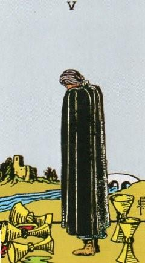
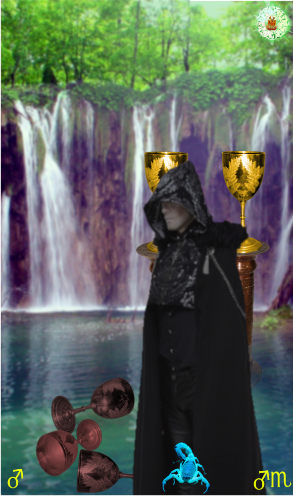
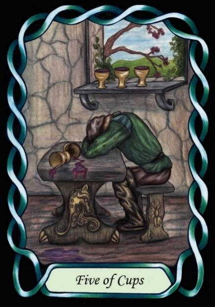

Five of Cups



Sign |
|
Eight: dark side |
|
Sign Ruler |
|
Element |
Water: emotions |
Modality |
|
Symbol |
Scorpion |
Decan |
|
Decan Ruler |
|
Time |
Oct 24-Nov 2 |
Intensity Scorpio I
An Apprentice to the dark side (sex, taboos, Death, resurrection), doubly ruled by Mars, is obsessed with the negative in themselves and others. He fails to see the positive side of life. As an Apprentice, he does not yet understand that this comes from within himself, and thinks it to be rue of the world around him. The Mars influence can induce a tendency to denigrate others, and to have a lack of empathy.
Goldschneider Personology
These intense and focussed individuals are excellent at persisting until they get what they want, although sometimes they may drift, finding little in life to be worthy of their effort. They tend to judge people according to their intent, rather than success, and so often need to learn to curb critical tendencies.
RWS Imagery
A person focuses intently and critically on the mistake of three spilled Cups, when they should perhaps focus on the two others.
Summary
Intense focus on the negative, darkness, and emotional turmoil. Individuals born under this decan possess persistence, critical thinking, and emotional depth, but may struggle with negative outlook, lack of empathy, and critical tendencies.